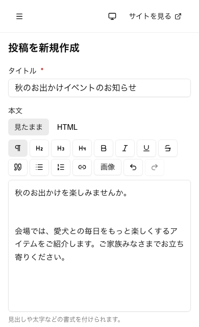
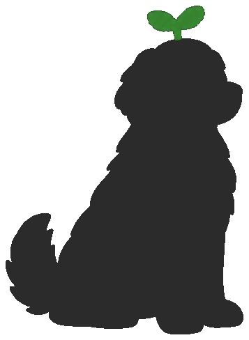

AIとつくる CMSで育てる
つくるその先も育てる
AIと一緒にサイトをつくる。
そのあとの更新も、ひとつのCMSで。
いつものWordPressにもうひとつの選択肢
タイトルを書いて、本文を整える。実際の管理画面で、記事づくりの流れをご覧ください。
同じ操作のGIFをダウンロード動画を再生できませんでした。操作デモを動画ファイルで開く
作って終わりにしない。
更新しやすいサイトを届ける。
お知らせを出す。写真を差し替える。問い合わせに対応する。サイト公開後に続く仕事も、制作の最初から考えておく。案件ごとに増えていく知識や工夫を、次の制作にもつなげます。
AIとつくって、人が使う。
ひとつのサイトを、
動かすところから。
制作環境を用意する
MacまたはWindowsでセットアップ画面を開き、保存先とサイト名を指定。サイトと管理画面を手元で起動します。
AIと案件に合わせる
Claude Code、Codex、Cursorなどに、作りたいサイトを伝えます。プロジェクトにあるルールを読み、デザインや機能を調整します。
確認して、運用へつなぐ
プレビューで見た目を確認し、品質検証と公開準備を進めます。日々の記事や画像の更新は管理画面から行えます。
日々の仕事に必要な機能を。
更新のたびに、
道具を探さなくていい。
標準機能の利用に、機能別の有料プラグイン購入は不要です。案件固有の機能は、AIと一緒に拡張していけます。
- 記事とページ
- 下書き、プレビュー、公開へ。文章と画像を編集し、更新内容を確認する流れをひとつに。
- 案件に合ったコンテンツ
- 実績、商品紹介、スタッフ紹介など、扱う情報に合わせた投稿タイプと入力項目を用意。
- 画像と分類
- メディアを選び、カテゴリやタグで整理。情報が増えても、探しやすい状態で管理。
- お問い合わせ
- フォームの項目や通知先を設定。受信した内容と対応状況を管理画面で確認。
- メニューとSEO
- サイトの導線や検索結果の情報を整備。コンテンツを作ったあとの公開準備まで。
- 履歴と復旧
- 変更履歴とバックアップで、戻れる状態を確保。更新前の確認も運用の一部に。
WordPressのプラグインやテーマをそのまま動かす製品ではありません。AIサービスやサーバーなどの外部利用料は別途必要です。
更新したいときに、手元から。
文章も、写真も。
スマホで更新を進める。
本文を見たまま書き、書式を整える。保存した内容をプレビューで確かめる。PCでもスマートフォンでも、同じ記事を管理画面から編集できます。
スマホでの記事編集画面（デモ内容）。サイトの初期制作にはMacまたはWindowsを使用します。

安心して任せるために。
変更には、確認を。
運用には、戻る道を。
「画面が出た」だけで終わらせない。アクセス権限、入力の検証、変更履歴、バックアップ。AIと作るサイトにも、確かめる手順を組み込みます。
- 役割に合わせた権限誰が何を編集できるかを管理。
- 公開前のチェック問題を確認してから、公開へ進む。
- バックアップと復旧変更に備え、戻す手順も用意。
- 持ち運べるプロジェクト案件のコードとルールを手元に保持。
始める前に、ここを確認。
始めてから環境の準備で迷わないよう、必要なものを先にまとめました。
Macで制作する
Apple Silicon搭載Mac
Docker Desktop
Node.js 20以上
Windowsで制作する
Windows 11とWSL2
Docker DesktopのWSL連携
WSL内のNode.js 20以上
AIと制作する
Claude Code、Codex、Cursorなど
使いたいAIエージェントを別途用意
初回セットアップにはネット接続が必要
サイトの公開には対応するサーバーとドメインが必要です。ホストへのPHP・MySQLの導入は不要。スマートフォンは管理画面での日常更新に使用します。
よくある質問
WordPressを使っていなくても使えますか？
使えます。SiteGrowKitは独立したCMSです。WordPressのインストールは必要ありません。新しいサイトから始められます。
WordPressのサイトをそのまま移せますか？
記事・分類などを取り込む移行機能があります。テーマやプラグインの互換実行は行いません。ページ、メニュー、独自機能などは元サイトの構成を確認し、対応範囲に合わせて移行します。
コードを書かずにすべて作れますか？
日々の記事や画像の更新には管理画面を使えます。オリジナルのデザインや機能の実装には、AIエージェントとコードを扱います。サイト制作と、公開後の日常更新で使い方が異なります。
「育てるCMS」とは、どういう意味ですか？
案件のルールや部品、検証方法をプロジェクトに残し、次の変更に活かすという意味です。AIが自動学習する機能ではありません。
有料プラグインやAI利用料は含まれますか？
SiteGrowKitの標準機能に、追加の有料プラグインは必要ありません。AIサービスの契約やAPI利用料、ホスティング、ドメインなどの費用は含まれません。

次のサイトづくりを、
ここから。
作りたいサイトや、いまの制作環境をお聞かせください。